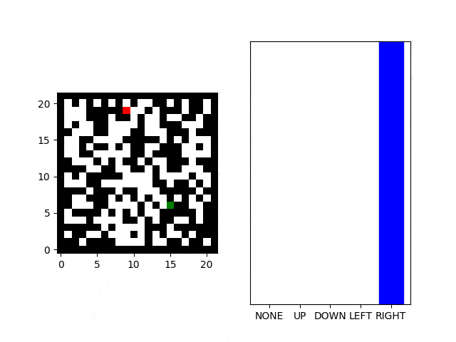

Pathfinding! Pathfinding is a favorite problem of mine from back in my game programming days. There are standard algorithms to use including the most common [Dijkstra's](https://en.wikipedia.org/wiki/Dijkstra%27s_algorithm) and [A*](https://en.wikipedia.org/wiki/A*_search_algorithm). I have implemented these many times for games, with different map representations.
The simplest map representation has been the old standard grid with spaces a walls.
In this picture black squares represents walls. White squares are empty. Red squares are the starting point for our agent, and the green square is the goal the agent is trying to reach.
Input: An NxM matrix representing the map. Matrix entires are one hot vectors indicating empty, wall, agent, or goal. Output: Best best direction to move first.The nice thing about definining the problem this way is that it is easy to generate training examples. We just need to create some maps, run a traditional pathfinding algorithm to find the full path, and then use the first step of that as a label for the example. I started with 10x10 maps, but this doesn't let us get into interesting examples where greedy search doesn't work. 20x20 maps are far more interesting and have opportunities for open rooms, false turns, and other interesting features.
Pathfinding centers around analysis of individual cells and their neighboors. Traditional pathfinding involves visiting neighboors from the start point and exploring outward. It intuitively makes sense that a convolution filter as the start of our model would be successful as these convolution layers would be better able to represent the neighboor hoods of nodes on our grid and the associated spatial connectivity.
I experimented with a few different layering approachs, but settled on a fairly standard setup that came from some of the standard MNIST hardwriting recognition models. This layering approach produces far fewer parameters than having just a few fully connected dense layers.keras.layers.Conv2D(grid_size + 2, kernel_size=5, padding="Same", input_shape=[grid_size, grid_size, 4], activation='relu'), keras.layers.Conv2D(grid_size + 2, kernel_size=5, padding="Same", activation='relu'), keras.layers.MaxPooling2D(pool_size=(2, 2)), keras.layers.Dropout(0.25), keras.layers.Conv2D((grid_size + 2) * 2, kernel_size=3, padding="Same", activation='relu'), keras.layers.Conv2D((grid_size + 2) * 2, kernel_size=3, padding="Same", activation='relu'), keras.layers.MaxPooling2D(pool_size=(2, 2), strides=(2, 2)), keras.layers.Dropout(0.25), keras.layers.Flatten(), keras.layers.Dense((grid_size * grid_size)/2, activation=tf.nn.relu), keras.layers.Dropout(0.25), keras.layers.Dense(NUM_CLASSES, activation=tf.nn.softmax)I didn't do a lot of exploration here beyond taking off the shelf ideas. In the future I'd like to do some work on hyperparameter optimization here.
I started with a simple approach to generating maps: randomly select cells a percentage of cells to be walls vs. open and then randomly select the start and end points. This has a high probability of creating unsolvable maps (more on that latter).
The problem with this approach is that it tends to create lots of training examples that are fairly easy. We want our model to learn to actually find paths through complex mazes, not just greedily move towards the goal. To this end, we add additional tests to each of our generated maps and throw out ones that aren't interesting: - Longer paths are generally more interesting. Setting a threshold equal to the length of one side of the map seems to work. - Choose paths where the first move is not in the obvious greedy direction. I.e. if the goal is up and to the left, choose maps where the path starts down or to the right. - Twisty paths that have a significant number of direction changes._________________________________________________________________ Layer (type) Output Shape Param # ================================================================= conv2d (Conv2D) (None, 22, 22, 24) 2424 _________________________________________________________________ conv2d_1 (Conv2D) (None, 22, 22, 24) 14424 _________________________________________________________________ max_pooling2d (MaxPooling2D) (None, 11, 11, 24) 0 _________________________________________________________________ dropout (Dropout) (None, 11, 11, 24) 0 _________________________________________________________________ conv2d_2 (Conv2D) (None, 11, 11, 48) 10416 _________________________________________________________________ conv2d_3 (Conv2D) (None, 11, 11, 48) 20784 _________________________________________________________________ max_pooling2d_1 (MaxPooling2 (None, 5, 5, 48) 0 _________________________________________________________________ dropout_1 (Dropout) (None, 5, 5, 48) 0 _________________________________________________________________ flatten (Flatten) (None, 1200) 0 _________________________________________________________________ dense (Dense) (None, 242) 290642 _________________________________________________________________ dropout_2 (Dropout) (None, 242) 0 _________________________________________________________________ dense_1 (Dense) (None, 5) 1215 ================================================================= Total params: 339,905 Trainable params: 339,905 Non-trainable params: 0 _________________________________________________________________
cmap = matplotlib.colors.ListedColormap(["white","black",'green','red'], name='from_list', N=None) plt.imshow(np.array(self.map).transpose(), cmap=cmap, origin="lower")
I had to transpose the map as my coordinate system and layout of the map arrays doesn't quite match what matplotlib wants. In addition to showing the map, we also want to visualize the outputs of the model. I used an example from the [tensorflow docs](https://www.tensorflow.org/tutorials/keras/basic_classification) that shows the correct answer as blue and the predicted answer as red if it is wrong. We can then combine these together into a single plot of the current map state and the agent's decision making output:
Test Solvable accuracy: 0.98 Test Solvable Hard accuracy: 0.9475 Test Solvable Long accuracy: 0.9729
These results are lower from a functional perspective then necessary. The main reason for this is that we consider correctness to be when it follows exactly the path that Dijkstra's would create. There are many paths, especially involving larger open "rooms" where there are two or more paths that are equally good and we shouldn't lower our accuracy based on the model choosing a different one. While the results look good from a general "machine learning" perspective of other kinds of problems, unfortunately in the real world settings they are quite poor. Consider that any particularly interesting path in a 20x20 world is probably 20 steps long. That means that 0.9729^20 = 0.57 chance of finding the right path every step along the way.
Now that we have a trained model, let's use it! This part is pretty straight forward.